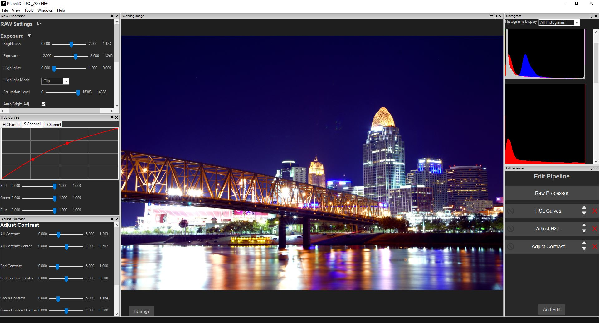
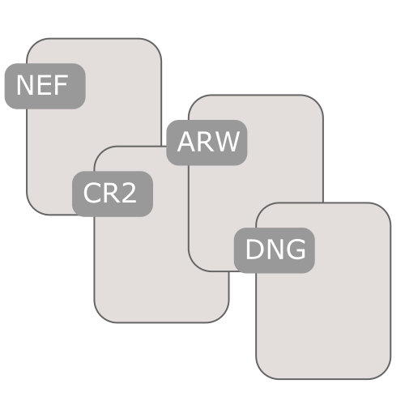
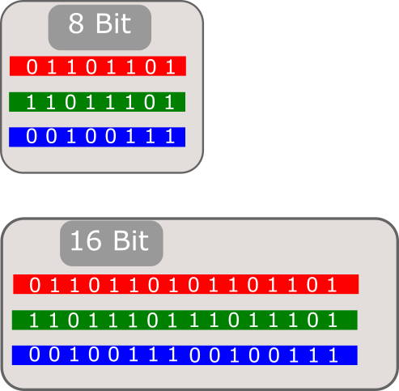

Introducing PhoediX, a free, open source, non-destructive image editing application! With the ability to handle RAW files, 16 bits per channel processing, and a customizable edit order, you take full control of all aspects of the image, from start to finish. PhoediX is available for Windows, macOS, and Linux.


Non-Destructive Editing
PhoediX is a non-destructive image editor, meaning the work in progress photo is just a rendering of edits applied to the original. The original photo (be it a RAW file or bitmap like JPG, PNG, BMP, TIFF), PhoediX never writes to this file. The edits are stored in a "sidecar" file in a subfolder of the image. What you see in PhoediX is just a rendering. Once you are happy with the photo, you may export the rendering to a new file. This will allow you to keep the original file along with the edit sidecar file, so you can go back later and keep editing where you left off at anytime.

RAW Files
With the help of the library LibRaw, PhoediX is able to read and process RAW files from over 1000 cameras! From the newest camera makes to older classics, most likely your digital camera will be supported. For more information about LibRaw, visit www.libraw.org

8 / 16 Bits Per Channel
PhoediX allows the image processing to work in both 8 or 16 bits per channel. Most common images are 8 bits per channel, but allowing processing in 16 bit per channel allows much greater dynamic range, and less artifacts to appear (especially when combining multiple color manipulating edits). Even if exporting to an 8 bit image (most common image formats are 8 bit) processing in full 16 bits can create smoother gradients and fewer artifacts in the final export.

Edit Pipeline
Use the Edit Pipeline to define the order of edits. You can place edits in any order, and use multiple of the same edit (even with different parameters). Easily copy/paste edit parameters between edits in the same project, or in different projects! With the Edit Pipeline, you are in full control of the final image.
Copyright Jacob Chesley 2018